Can your defense catch
a single attack?
Security tools promise billions of blocked events. But there's only one number that matters: your response time.
What vendors promise
1,000,000,000
Events blocked. Can’t be verified.



What VEX proves
1
Real attack. Verified result.
There’s one way to find out.
See how it worksOne attack. One clock.
One answer.
One real attack, launched when you say. Your defenses, whether people or product, respond as normal. The clock starts.
Connect VEX
In about an hour VEX has the data it needs.
Identify the breach
VEX surfaces the single most probable way an attacker gets into your business right now.
You start the clock
You — or anyone on your team — click to launch that attack. The clock starts now.
Your defense hunts
Whatever protects your business goes on watch looking for where it happened and what it was — Your SOC. Your MDR. Your security tools. Or VEX.
Make the call
Name where it happened and what it was. VEX verifies it and stops the clock — a provable time to detect.
Proof, not promises.
Every exercise ends with a verified result you can put in front of the board: caught or missed, and how long it took.
Missed it? You’ll see exactly where the trail went cold — and VEX shows you the one fix that closes the gap.
It started in an auditorium.
For years, our founder David Hunt ran a simple exercise with U.S. Army cyber defenders: one attack, one endpoint, 100+ defenders. The first to find it rang a bell. The point wasn't the score. It was finding out whether the defense worked when it mattered.
VEX is built by people who've spent their careers on both sides of the attack.
-
Founder
David Hunt
MITRE • Mandiant • USG
-
Head engineer
Phil Urquhart
10 years vulnerability assessment
-
Head of security
John Jackman
Relevant expertise • Relevant expertise

Need a defense?
Managed VEX — continuous prevention, detection and response, backed by the operators who built it.